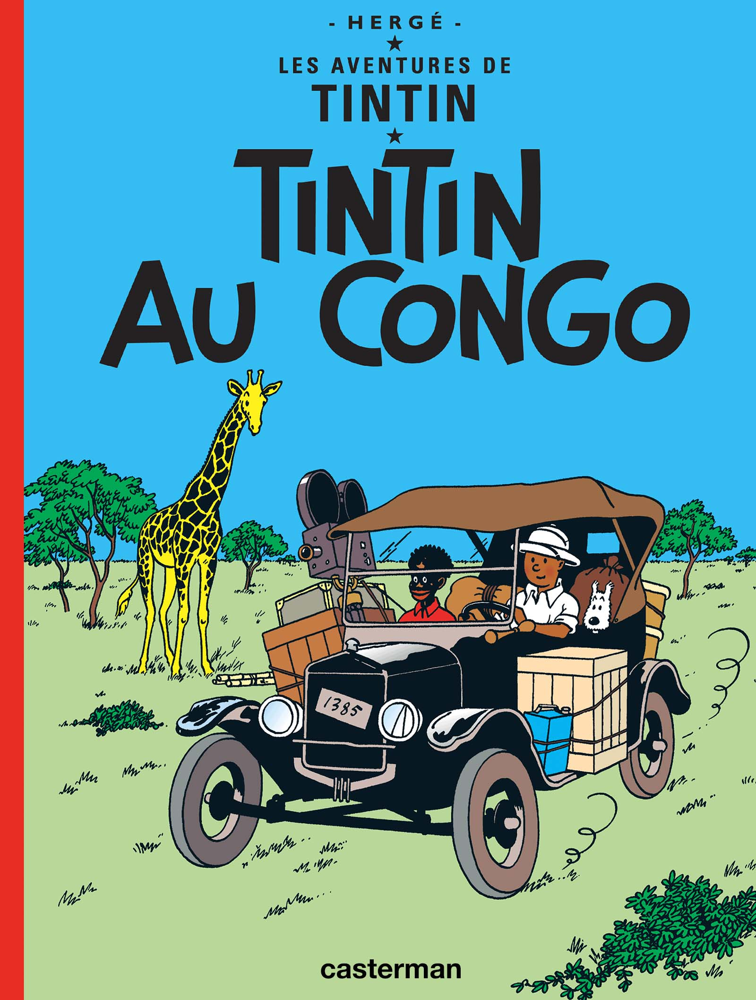
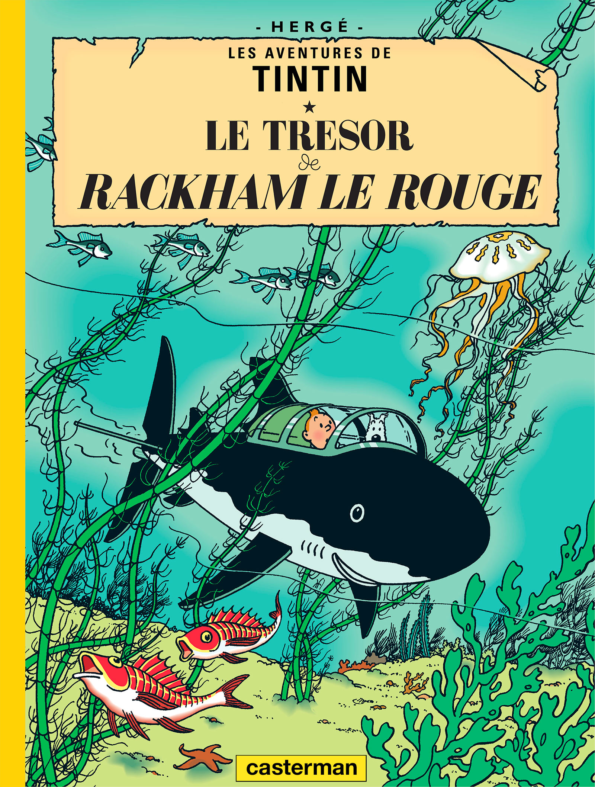
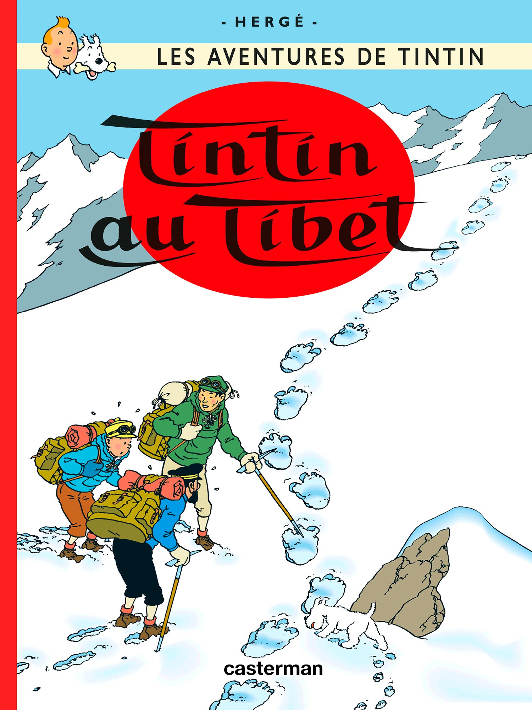

LES BANDES DESSINÉES :
Hergé a commencé a écrire et dessiner les bandes dessinées Les Aventures de Tintin en 1929 et a publié la première, Tintin au Pays des Soviets, en 1930. Il en a, par la suite, écrit 23 autres même s'il pas pu achever la dernière, Tintin et l'Alph - Art. La première et la dernière BD sont considérées comme des Hors - Séries et le nombre d'albums "normaux" est donc souvent porté à 22.
Tous les albums seront édités par les Éditions Casterman.
TINTIN AU PAYS DES SOVIETS :
HORS - SÉRIE
Nous sommes le 10 janvier 1929, à Bruxelles. Accompagné de son chien Milou, un tout jeune reporter monte dans le train à destination de Moscou. Pour Tintin, c'est le début d'une grande aventure. Pour Hergé, c'est le vrai début de sa carrière. Les Aventures de Tintin, reporter du Petit Vingtième au pays des Soviets paraîtront sous forme d'album en 1930. Cette année marque la naissance d'un mythe qui n'est pas près de s'éteindre, et les premiers signes d'une troublante confrontation entre la fiction et la réalité.TINTIN ET L'ALPH - ART :
HORS - SÉRIE
Resté inachevé à la mort d’Hergé, en 1983, Tintin et l'Alph - Art (1986) devait décrire les milieux des sectes, et amener Tintin à s'immiscer dans un monde qu’affectionnait Georges Remi, dit Hergé : celui de l’art contemporain, celui de l’avant - garde... Si cet album posthume ne peut qu’évoquer la trame de ce récit suspendu, il est en revanche le témoignage de l’état pur de l’extraordinaire talent narratif et graphique du père de Tintin. Comme cette aventure, comme Tintin, nous aussi, lecteurs, nous restons magiquement suspendus à la plume d’Hergé.

TINTIN AU CONGO :
Les Aventures de Tintin, reporter du Petit Vingtième au Congo (1931) est le reflet d'une époque coloniale et paternaliste. Pour ces nouvelles aventures, Hergé improvise encore le récit, mais plus pour longtemps. À peine revient-il d'URSS que Tintin se rend en Afrique. Devenu sorcier au royaume de Babaoro'm, Tintin déjouera les pièges d'une bande de gangsters qui souhaitaient contrôler la production de diamant au Congo. L'Afrique, représentée de manière naïve, reflète l'esprit paternaliste d'une Belgique colonialiste au début des années 1930.TINTIN EN AMÉRIQUE :
Dans Tintin en Amérique (1932), le héros confirme sa vocation de redresseur de torts, en s'opposant au mafioso Al Capone, aux gangsters de Chicago et aux fripouilles de tout acabit. Déjà, Hergé témoigne d'une vision généreuse du monde, stigmatisant par exemple des Blancs pour leurs comportements envers les Indiens Peaux-Rouges. La renommée de Tintin s'étend au - delà de l'Atlantique. Si bien que lorsqu'il arrive à Chicago, en pleine prohibition, tous les bandits et malfaiteurs associés lui préparent une réception des moins confortables. Tintin devra user de tout son courage et de toute son intelligence pour survivre !
LES CIGARES DU PHARAON :
Ce quatrième tome de la série, Les Cigares du Pharaon, est sorti à l'automne 1934. Tintin part sur les traces de trafiquants d'opium à travers l'Égypte et l'Inde. Port-Saïd, Le Caire, les pyramides, les tombeaux des pharaons, la mer Rouge, la jungle et ses éléphants... Tintin va vivre des aventures peu banales : il tente d'échapper au poison qui rend fou, rencontre un archéologue extravagant, un Maharadja en danger de mort...LE LOTUS BLEU :
Dans Le Lotus bleu (1936) Tintin s'engage à démanteler le trafic d'opium international qui sévit dans un pays mythique certes, mais dont il ignore tout, la Chine. À l'aube de ce récit, la généreuse ambition de Tintin semble démesurée. Aidé par la seule société secrète, Les Fils du Dragon, et par son ami Tchang, rencontré tardivement, il parvient à surmonter tous les obstacles et ruiner les perfides machinations de ses nombreux ennemis.

L'OREILLE CASSÉE :
L'Oreille Cassée (1937) est une course poursuite palpitante. Tintin s'embarque pour l'Amérique du Sud afin de récupérer un fétiche volé. Là - bas s'opposent toutes sortes d'intérêts : militaires, économiques, la guerre du Gran Chaco venant d'opposer, trois ans durant, la Bolivie et le Paraguay. Une statuette Arumbaya est volée... puis restituée à son musée. Mais un détail révèle à Tintin que ce n'est pas l'original qui a été rendu, mais une simple réplique. Quel mystère cache donc cette statuette pour que l'on veuille en maquiller le vol ? Tintin s'embarque pour l'Amérique du Sud où, croit - il, se trouve la clef de cette énigme.L'ÎLE NOIRE :
De retour d'Amérique du Sud, Tintin s'embarque dans une aventure britannique palpitante, rythmée par d'incessants rebondissements. Pour la première fois et non la dernière, Tintin s'oppose au fourbe Docteur Müller. Ce dernier a organisé, à l'échelle européenne, un vaste trafic de fausse monnaie. Après bien des péripéties, Tintin réussira-t-il à le démanteler ?

LE CRABE AUX PINCES D'OR :
Le Crabe aux Pinces d'Or (1941) renoue avec l'aventure exotique. Celle-ci mène Tintin en Afrique du Nord. Il y déjoue les plans d'une bande de malfaiteurs qui dissimulaient de l'opium dans des boîtes de crabe. Avec l'apparition du Capitaine Haddock, nous découvrons un nouvel art de s'exprimer qui ne manque pas de piment et de sonorité. Parmi eux, l'un des plus inattendus est à coup sûr "végétarien".
L'ÉTOILE MYSTÉRIEUSE :
À bord d'un navire polaire dont le Capitaine Haddock assure le commandement, Tintin et quelques savants européens partent pour l'océan Arctique, où s'est écrasé un aérolithe contenant un métal inconnu. Mais dès qu'ils apprennent qu'un autre navire fait également route vers l'étrange météorite, leur expédition se transforme en une véritable course contre la montre.LE SECRET DE LA LICORNE :
En fouillant le grenier, le Capitaine Haddock retrouve la trace de son ancêtre, le chevalier de Hadoque. Ce légendaire loup des mers s'est rendu célèbre par ses déboires avec le cruel pirate Rackham le Rouge. Un roman maritime de plus ? Certainement pas ! Car le chevalier devient le dépositaire d'un fabuleux trésor. Pour Tintin, Haddock et une série de malfrats, il s'agit de le retrouver. Mais les pistes et les énigmes se multiplient.

LE TRÉSOR DE RACKHAM LE ROUGE :
Dans Le Secret de La Licorne (1943) et Le Trésor de Rackham le Rouge (1944) qui en est la suite, Tintin accompagne le Capitaine Haddock sur les traces de son glorieux ancêtre, le chevalier François de Hadoque. Inventeur d'un sous - marin de poche en forme de requin, un certain Tryphon Tournesol contribue à la découverte du trésor, avant d'offrir au Capitaine le château de ses aïeux : Moulinsart.LES 7 BOULES DE CRISTAL :
Dans Les 7 Boules de Cristal (1948), sept savants sont mystérieusement frappés de léthargie à leur retour d'une expédition dans les Andes. Le Professeur Tournesol ayant disparu, Tintin et le Capitaine partent à sa recherche.
LE TEMPLE DU SOLEIL :
Dans Le Temple du Soleil (1949), Tintin, Milou et le Capitaine Haddock s'envolent pour le Pérou à la recherche du Professeur Tournesol, enlevé pour avoir involontairement commis un sacrilège qui le destine au châtiment suprême.TINTIN AU PAYS DE L'OR NOIR :
La guerre a brutalement interrompu la prépublication de cette aventure, le 9 mai 1940. À cette époque, ni le Capitaine Haddock, ni le Professeur Tournesol, ni le château de Moulinsart n'avaient rejoint la saga tintinesque. Huit ans plus tard, le Journal Tintin publie à nouveau cet épisode. Avec un humour génial, Hergé va réintégrer les absents de jadis dans la refonte de l'aventure qu'il entreprend d'achever. En 1950, l'album est publié. Mais le monde change, aussi en conformité avec l'actualité, une nouvelle version, quelque peu modifiée, sera proposée au public en 1971.
OBJECTIF LUNE :
Dans Objectif Lune (1953), le Professeur Tournesol invite Tintin et le Capitaine Haddock à le rejoindre en Syldavie où il travaille sur le plus grand projet du siècle : l'envoi d'une fusée sur la Lune. Le défi s'annonce palpitant, d'autant plus qu'au grand effarement du Capitaine, le Professeur leur suggère d'être du voyage !ON A MARCHÉ SUR LA LUNE :
Cet album, d'une exactitude prophétique, poursuit l'aventure lunaire initiée dans Objectif Lune. Hergé repousse sans cesse les limites scénaristiques et envoie cette fois ses héros dans l'espace. Si aujourd'hui aller dans l'espace est presque une routine, au début des années cinquante, imaginer un tel récit relevait de la science - fiction. En effet, il est important de se rappeler que l'album fut publié en 1954 alors qu'Armstrong ne fît le premier pas sur la Lune qu'en 1969.

L'AFFAIRE TOURNESOL :
Une sensationnelle invention du Professeur Tournesol commence par provoquer des catastrophes au château de Moulinsart : toutes les vitres volent en éclat, ainsi que la plupart des objets en verre ! Malheureusement, cette trouvaille ne rejoindra pas le rayon des farces et attrapes. Des espions tentent de s'emparer de Tournesol pour lui soutirer ses plans. Il apparaît que les kidnappeurs sont des Bordures, éternels ennemis des Syldaves et bien décidés à transformer l'invention de Tournesol en arme de destruction massive.COKE EN STOCK :
Coke en stock met en lumière les pratiques scandaleuses des esclavagistes des temps modernes. L'incrédulité du Capitaine Haddock n'y changera rien. Le trafic d'êtres humains, cela existait encore au XXème siècle. Au XXIème aussi, hélas. Comme pour bien d'autres questions graves, Hergé fut sensible à cette dramatique actualité et la transposa dans une fiction pleine de rebondissements.

TINTIN AU TIBET :
Tintin au Tibet (1960), pure histoire d'amitié, sans le moindre méchant, décrit la recherche désespérée de Tintin pour retrouver son ami, le jeune Chinois Tchang, qui se rendait en Europe à bord d'un avion de ligne qui s'est écrasé dans l'Himalaya. Ce récit pathétique, qui rompt avec le ton extraverti des épisodes précédents, démontre que la fidélité et l'espoir sont capables de vaincre tous les obstacles, et que les préjugés - en l'occurrence, à l'égard de l'"abominable homme des neiges" - sont bien souvent le fruit de l'ignorance.LES BIJOUX DE LA CASTAFIORE :
Dans Les Bijoux de la Castafiore (1963), les principaux protagonistes de la série se retrouvent à Moulinsart pour y vivre une véritable comédie classique à huis clos. Tournant résolument le dos à l'aventure pour s'attacher à la difficulté de la communication entre les êtres, un "anti - récit" truffé de malentendus et de quiproquos plus cocasses les uns que les autres.